Team project
Family Garden
An AI-powered family game where everyday play becomes shared memory.
- Role
- Game systems, UI & AI integration
- Context
- Team game project
- Year
- 2026
- Output
- Godot Web & cloud prototype
- Tools & methods
- Godot · GDScript · Node.js · CloudBase · WebSocket · JSON Schema
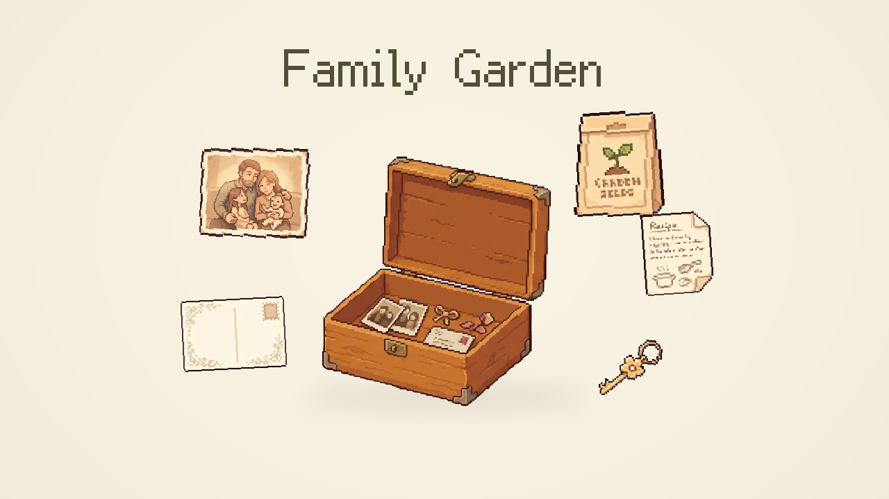
01A family world, chapter by chapter.
Choose a character and join a household. The opening box introduces the objects that guide the adventure.
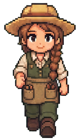
Girl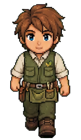
Boy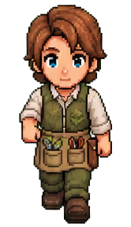
Father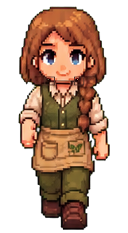
Mother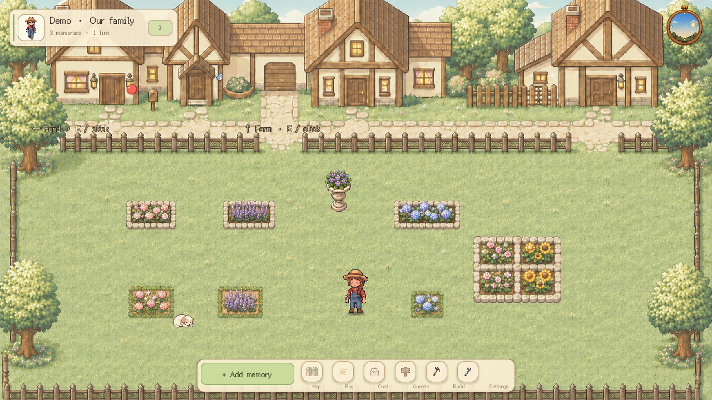
Garden
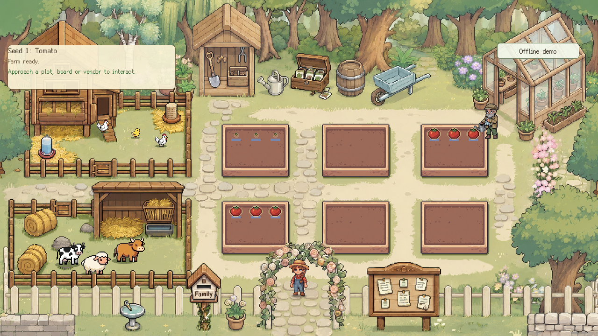
Farm
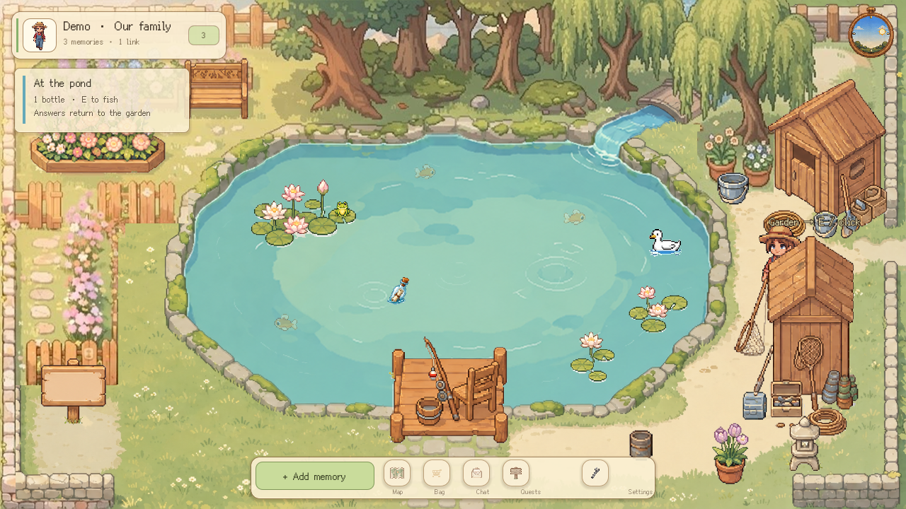
Fishpond
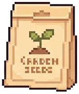
CHAPTER IThe first family meal
Garden → Farm → Kitchen
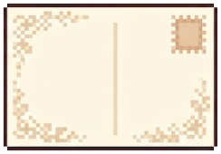
CHAPTER IIStories beyond the garden
Fishpond → Travel map → Postcards
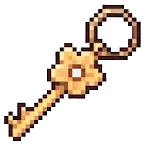
CHAPTER IIIA place for your memories
Memory garden → AI room → Free play
02Grow the ingredients. Make the first meal.
Harvests enter the shared pantry. In the kitchen, AI turns selected ingredients into a dish description and a conversation topic.
- Plant & water
- Harvest & store
- Cook & serve
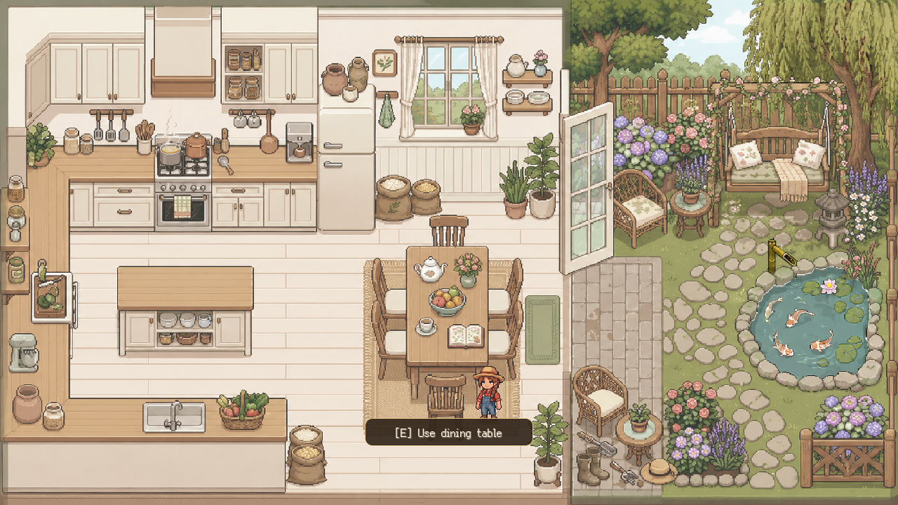
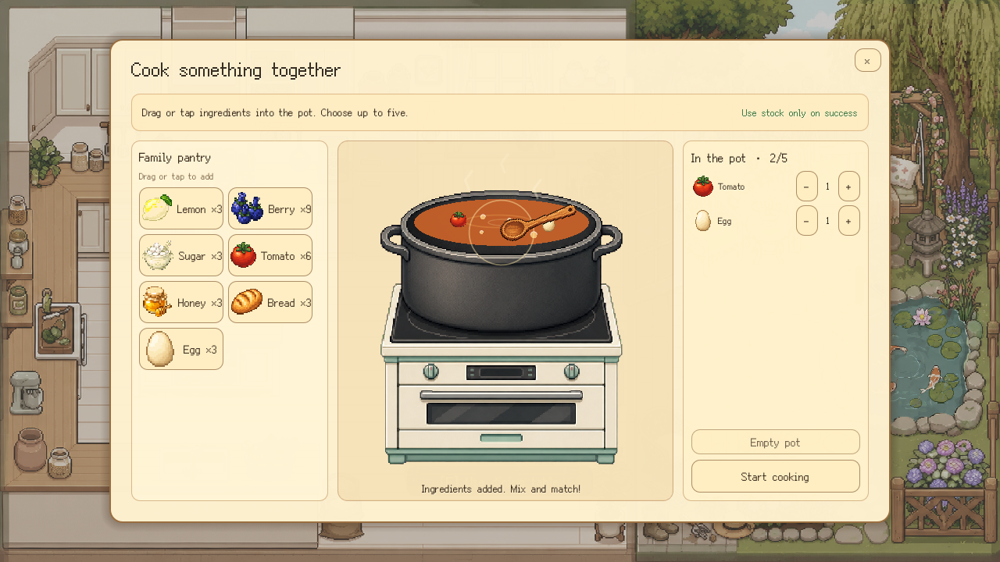
03Go fishing. Find something to talk about.
A bottle invites a family story. Saved answers return to the memory garden; places and postcards extend the journey.
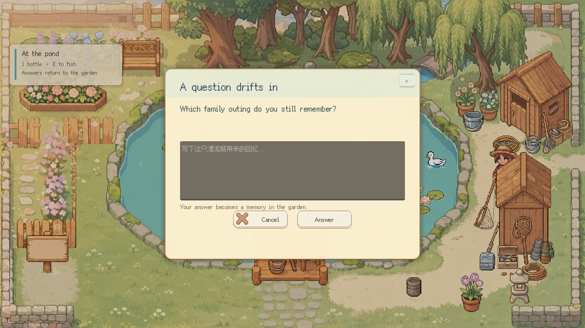
Beyond the pond
- Catch a fish
- Open a bottle
- Pin a place & send a postcard
04Collect a memory. Add another perspective.
AI drafts a memory; the player decides what to keep and which connections to explore.
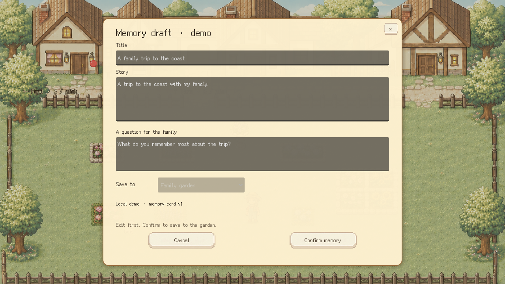
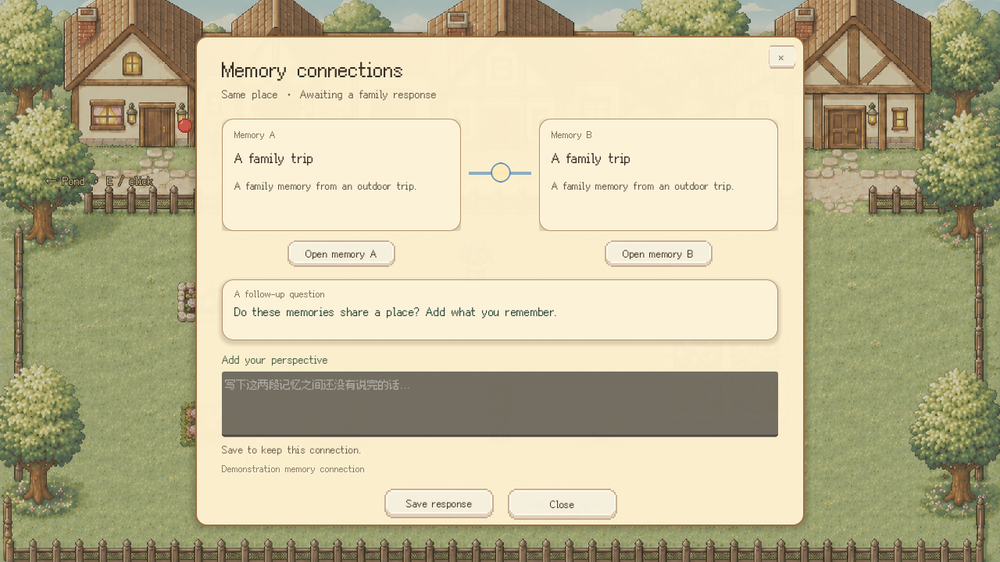
05Turn a familiar room into a place to explore.
AI recognises objects and zones. The game handles placement, so the player can enter and rearrange the room.
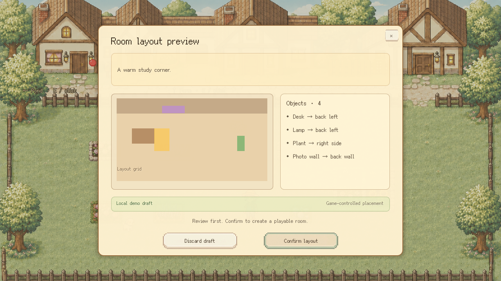
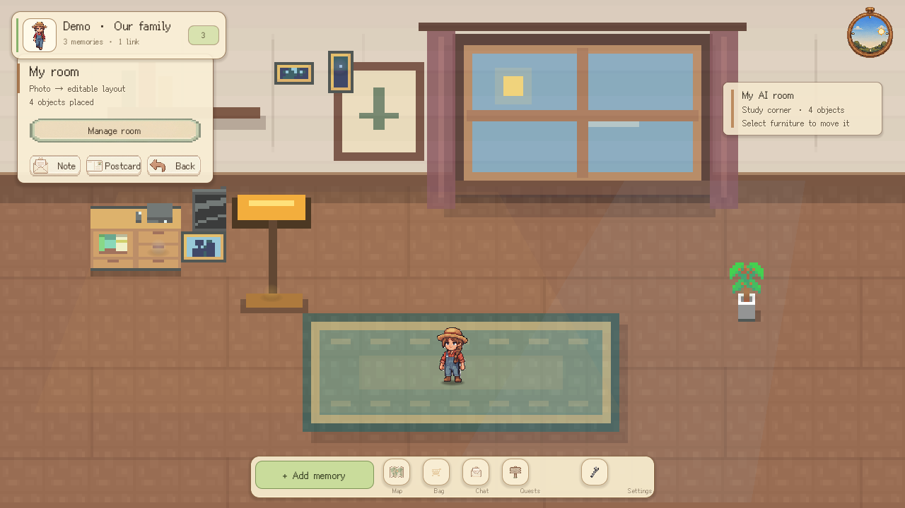
06Behind the shared world.
Godot Web
Play · Review · ConfirmAI functions
Schema + safety checks
Hunyuan
Text & vision · TokenHub
Data gateway
Member-scoped reads & writes
CloudBase
Database · private uploads
Presence relay
Position + change events
Family peers
Same-family session